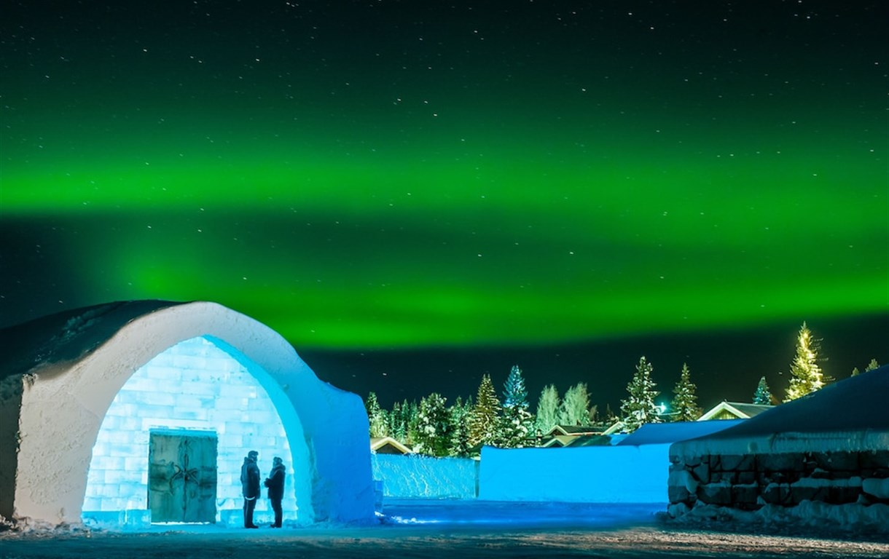
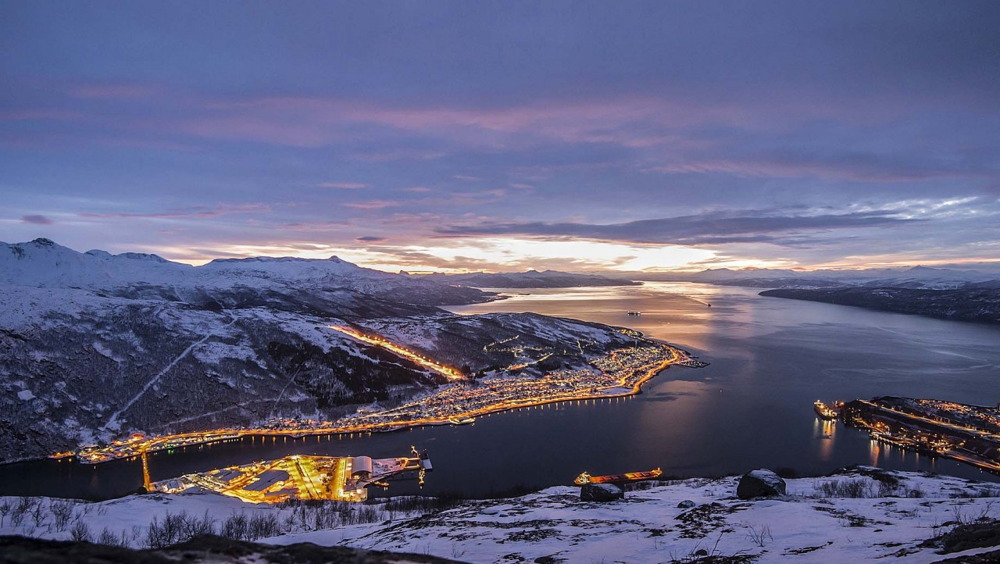
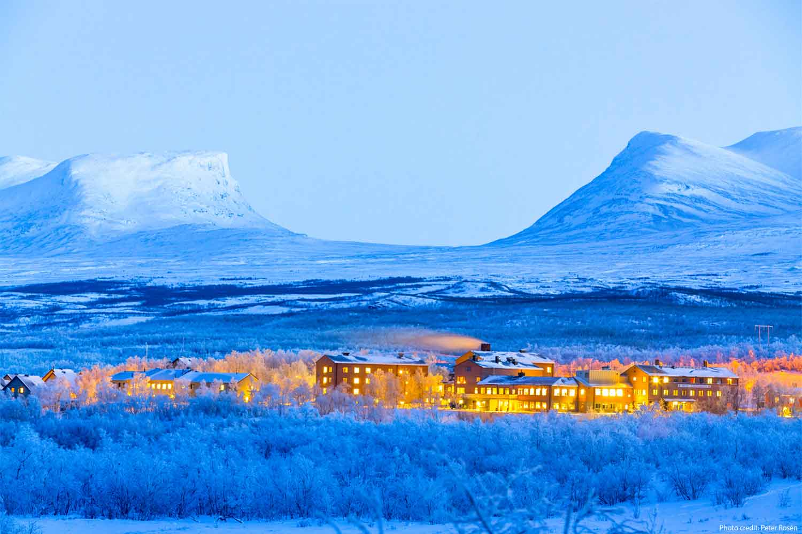
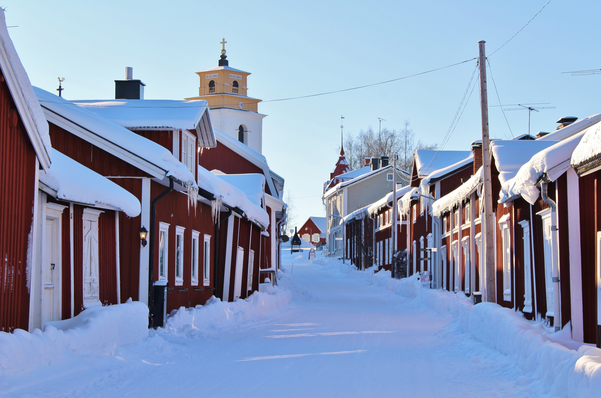

Discover the day-by-day itinerary, created just for you:
Day 01 - Land in Kiruna, then check-in at Ice Hotel, visit Reindeer Farm and do a Northern Lights hike
The day will start with a chilly experience! Check in at the unique IceHotel, then enjoy a warm lunch and head out to see the nearby Reindeer Farm. In the evening, take a guided hike through the woods, and hopefully see the Northern Lights!

Day 02 - Fullday excursion to Narvik
Take a drive all the way to the other side of the mountains, in Norway's Narvik. Have some time for the War Museum, to learn about how this area was impacted by the Second World War. Enjoy the drive back through wonderful views of Norwegian fjords and the Abisko mountain.

Day 03 - Abisko short hike, Gallivare and Jokkmokk
Take a morning hike in Abisko. Then take a drive all the way to this night's accommodation in Palberget, at a local farm. On the way, stopover in Gallivare and Jokkmokk and learn about local culture and history.

Day 04 - Storforsen hike, Gammelstaden and Lulea city
Take a drive to the Storforsen rapids, and hike up the path to see the magical views. Then, drive to Gammelstaden and have a walk in this surreal, old village. End the day in Lulea city and take the flight out from here.
